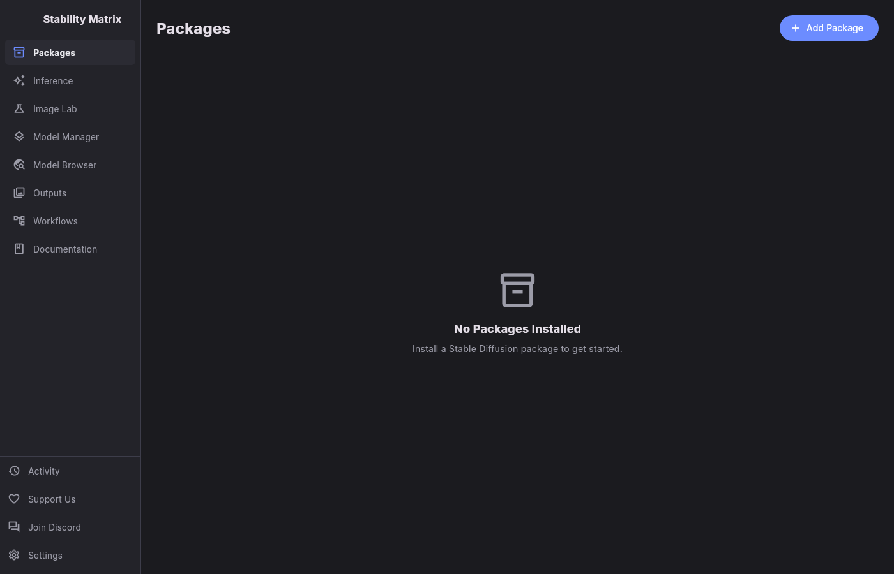

StableDart is a desktop workbench for Stable Diffusion — a Flutter port of Stability Matrix. Install and launch inference packages, manage shared models, browse CivitAI and Hugging Face, and generate images without juggling python environments.

Install ComfyUI, Stable Diffusion WebUI, Fooocus, InvokeAI, OneTrainer, FluxGym, AI-Toolkit, SwarmUI, Wan2GP and more — isolated per-package Python environments, one click to launch.
Checkpoints, LoRAs, VAEs, ControlNets and upscale models live in one shared folder every package can see. Import once, use everywhere, edit metadata in place.
Search CivitAI with filters and previews, pull files straight from Hugging Face repos, dig through CivArchive and OpenModelDB — downloads land in your library.
Text-to-image, image-to-image, upscaling and video tabs with 29 control cards: prompts, samplers, seeds, ControlNet, FreeU, FaceDetailer, WAN models, upscalers and output settings.
Pause, resume and queue downloads from the activity view. Generated images collect in Outputs with prompt, seed and parameter details.
AGPL-3.0 licensed, desktop only, no accounts required. Signed builds ship for Linux (.zip/.deb/.rpm), Windows (.zip) and macOS (.dmg).
StableDart mirrors Stability Matrix's architecture — the same pages, the same package catalog, the same inference surface — rebuilt in Flutter for Linux, Windows and macOS.
It is tested like a product: full unit and widget coverage plus golden screenshots for every major screen, built and released from a reproducible CI pipeline.